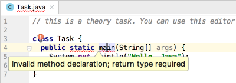

Main method
The declaration of the main method
Java is primarily an object-oriented language. It means a Java program can be considered to be a collection of objects that communicate via calling each other's methods. A typical Java program includes a lot of classes, interfaces, objects, and other concepts from object-oriented programming.
Even the simplest "procedural-style" program should have at least one class and the main method inside it to start the program. The main method is the entry point for any applications. Ever since Java 7 there has been no other way to start an application without this method (excluding the case when you start your application inside a special container for applications but it is not considered in this course).
Let's see an example of the simplest application that prints the text "Hello, Java" in the standard output:
class Task {
public static void main(String[] args) {
System.out.println("Hello, Java");
}
}
Here is a class named Task. The class contains the main method for starting the program.
It is important to mention that a class containing the main method can have any name, but the main method should always have the same name.
Let's take a closer look at the declaration of the main method:
public static void main(String[] args)
- The keyword public indicates that the method can be invoked from everywhere
- The keyword static indicates the method can be invoked without creating an instance of the class
- The keyword void indicates the method doesn't return any value
- The array variable args contains arguments entered at the command line if there are no arguments then the array is empty
As you can see, even the simplest Java application contains a lot of concepts. All of them will be studied in the next few topics which relate to methods and object-oriented programming. For now you just need to understand how to write and run a simple Java program with the main method.
Invalid declarations of the main method
If the main method has an invalid declaration, two cases are possible:
- your program cannot be compiled
- your program is successfully compiled but can't be started
Your program cannot be compiled
It is the case when the main method declaration breaks the syntax of Java.
Example: no returning value (even void)
class Task {
public static main(String[] args) {
System.out.println("Hello, Java");
}
}
Example: a mistake in the keyword (pubic instead of public)
class Task {
pubic static void main(String[] args) {
System.out.println("Hello, Java");
}
}
A program can be compiled but cannot be run
It is the case when the main method has a correct declaration as a regular method but it doesn't satisfy the specific requirement of the main method.
Examples: should be String[] args
class Task {
public static main(String args) {
System.out.println("Hello, Java");
}
}
Example: there is no keyword static
class Task {
public void main(String[] args) {
System.out.println("Hello, Java");
}
}
In both cases, an error happens at runtime.
Conclusion
So, the main method is the entry point of any Java programs. It has a very specific syntax which you need to remember.
IDE tips & tricks
Mistakes are an essential part of successful learning. They can also be very annoying and drain your motivation. The IDE helps you with code errors, by alerting you to the most common ones and suggesting solutions.
Take a look at the code example from the “Invalid declarations of the main method” above. The red squiggly line under the code means there’s something wrong. Put the cursor on the highlighted code to see what the issue is:

You can use the red bulb or press Alt + Enter to see a list of suggested fixes.
Note the red icon at the top right. It shows you that there are some errors in the file. Hover over the red stripe to see the list of errors. Click on it to navigate to the line with the error and fix it:
When everything is fixed, there is a green check icon in the right top corner: